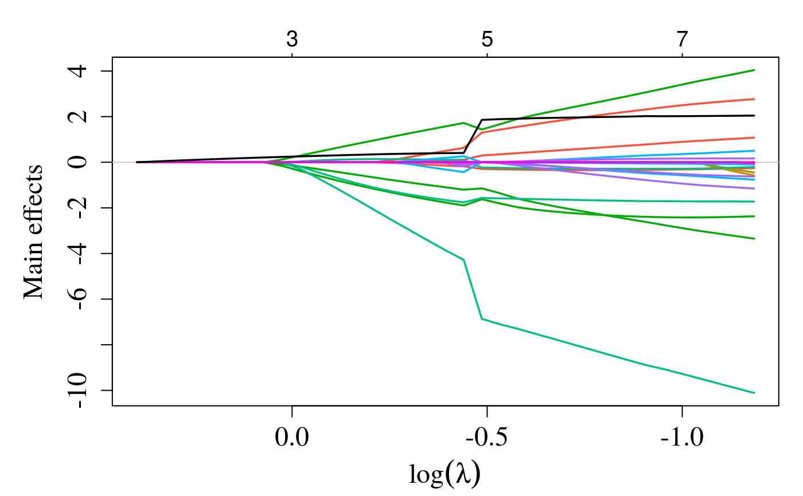
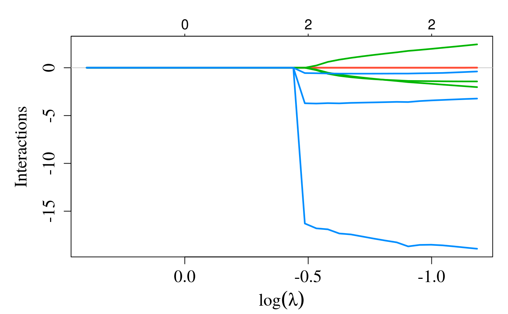

Function to fit the Sparse Additive Interaction Model with strong heredity for a sequence of tuning parameters. This is a penalized regression method that ensures the interaction term is non-zero only if its corresponding main-effects are non-zero. This model only considers the interactions between a single exposure (E) variable and a high-dimensional matrix (X). Additve (non-linear) main effects and interactions can be specified by the user. This can also be seen as a varying-coefficient model.
sail(x, y, e, basis = function(i) splines::bs(i, df = 5), group.penalty = c("gglasso", "grMCP", "grSCAD"), family = c("gaussian", "binomial"), center.x = TRUE, center.e = TRUE, expand = TRUE, group, weights, penalty.factor = rep(1, 1 + 2 * nvars), lambda.factor = ifelse(nobs < (1 + 2 * bscols * nvars), 0.01, 1e-04), lambda = NULL, alpha = 0.5, nlambda = 100, thresh = 1e-04, fdev = 1e-05, maxit = 1000, dfmax = 2 * nvars + 1, verbose = 0)
Arguments
| x | input matrix of dimension |
|---|---|
| y | response variable. For |
| e | exposure or environment vector. Must be a numeric vector. Factors must be converted to numeric. |
| basis | user defined basis expansion function. This function will be
applied to every column in |
| group.penalty | group lasso penalty. Can be one of |
| family | response type. See |
| center.x | should the columns of |
| center.e | should exposure variable |
| expand | should |
| group | a vector of consecutive integers, starting from 1, describing
the grouping of the coefficients. Only required when |
| weights | observation weights. Default is 1 for each observation. Currently NOT IMPLEMENTED. |
| penalty.factor | separate penalty factors can be applied to each
coefficient. This is a number that multiplies lambda to allow differential
shrinkage. Can be 0 for some variables, which implies no shrinkage, and
that variable is always included in the model. Default is 1 for all
variables. Must be of length |
| lambda.factor | the factor for getting the minimal lambda in the lambda
sequence, where |
| lambda | a user supplied lambda sequence. Typically, by leaving this
option unspecified users can have the program compute its own lambda
sequence based on |
| alpha | the mixing tuning parameter, with \(0<\alpha<1\). It controls
the penalization strength between the main effects and the interactions.
The penalty is defined as $$\lambda(1-\alpha)(w_e|\beta_e|+ \sum w_j
||\beta_j||_2) + \lambda\alpha(\sum w_{je} |\gamma_j|)$$Larger values of
|
| nlambda | the number of lambda values. Default: 100 |
| thresh | convergence threshold for coordinate descent. Each
coordinate-descent loop continues until the change in the objective
function after all coefficient updates is less than |
| fdev | minimum fractional change in deviance for stopping path. Default:
|
| maxit | maximum number of outer-loop iterations allowed at fixed lambda
value. If models do not converge, consider increasing |
| dfmax | limit the maximum number of variables in the model. Useful for
very large |
| verbose | display progress. Can be either 0,1 or 2. 0 will not display any progress, 2 will display very detailed progress and 1 is somewhere in between. Default: 1. |
Value
an object with S3 class "sail", "*", where "*" is
"lspath" or "logitreg". Results are provided for converged values of lambda
only.
- a0
intercept sequence of length
nlambda- beta
a (# main effects after basis expansion x
nlambda) matrix of main effects coefficients, stored in sparse column format("dgCMatrix")- alpha
a (# interaction effects after basis expansion x
nlambda) matrix of interaction effects coefficients, stored in sparse column format("dgCMatrix")- gamma
A
p x nlambdamatrix of (\(\gamma\)) coefficients, stored in sparse column format("dgCMatrix")- bE
exposure effect estimates of length
nlambda- active
list of length
nlambdacontaining character vector of selected variables- lambda
the actual sequence of lambda values used
- lambda2
value for the mixing tuning parameter \(0<\alpha<1\)
- dfbeta
the number of nonzero main effect coefficients for each value of lambda
- dfalpha
the number of nonzero interaction coefficients for each value of lambda
- dfenviron
the number of nonzero exposure (
e) coefficients for each value of lambda- dev.ratio
the fraction of (null) deviance explained (for "lspath", this is the R-square). The deviance calculations incorporate weights if present in the model. The deviance is defined to be 2*(loglike_sat - loglike), where loglike_sat is the log-likelihood for the saturated model (a model with a free parameter per observation). Hence dev.ratio=1-dev/nulldev.
- converged
vector of logicals of length
nlambdaindicating if the algorithm converged- nlambda
number of converged lambdas
- design
design matrix (X, E, X:E), of dimension
n x (2*ncols*p+1)ifexpand=TRUE. This is used in thepredictmethod.- nobs
number of observations
- nvars
number of main effect variables
- vnames
character of variable names for main effects (without expansion)
- ncols
an integer of basis for each column of x if
expand=TRUE, or an integer vector of basis for each variable ifexpand=FALSE- center.x
were the columns of x (after expansion) centered?
- center.e
was
ecentered?- basis
user defined basis expansion function
- expand
was the basis function applied to each column of x?
- group
a vector of consecutive integers describing the grouping of the coefficients. Only if expand=FALSE
- interaction.names
character vector of names of interaction variables
- main.effect.names
character vector of names of main effect variables (with expansion)
Details
The objective function for family="gaussian" is $$RSS/2n
+ \lambda(1-\alpha)(w_e|\beta_e|+ \sum w_j ||\beta_j||_2) +
\lambda\alpha(\sum w_{je} |\gamma_j|)$$ where RSS is the residual sum
of squares and n is the number of observations. See Bhatnagar et al.
(2018+) for details.
It is highly recommended to specify center.x = TRUE and
center.e = TRUE for both convergence and interpretation reasons. If
centered, the final estimates can be interpreted as the effect of the
predictor on the response while holding all other predictors at their mean
value. For computing speed reasons, if models are not converging or running
slow, consider increasing thresh, decreasing nlambda, or
increasing lambda.factor before increasing maxit. Then try
increasing the value of alpha (which translates to more penalization
on the interactions).
By default, sail uses the group lasso penalty on the basis
expansions of x. To use the group MCP and group SCAD penalties (see
Breheny and Huang 2015), the grpreg package must be installed.
References
Jerome Friedman, Trevor Hastie, Robert Tibshirani (2010). Regularization Paths for Generalized Linear Models via Coordinate Descent. Journal of Statistical Software, 33(1), 1-22. http://www.jstatsoft.org/v33/i01/.
Breheny P and Huang J (2015). Group descent algorithms for nonconvex penalized linear and logistic regression models with grouped predictors. Statistics and Computing, 25: 173-187.
Yang Y, Zou H (2015). A fast unified algorithm for solving group-lasso penalize learning problems. Statistics and Computing. Nov 1;25(6):1129-41. http://www.math.mcgill.ca/yyang/resources/papers/STCO_gglasso.pdf
Bhatnagar SR, Yang Y, Greenwood CMT. Sparse additive interaction models with the strong heredity property (2018+). Preprint.
See also
Examples
f.basis <- function(i) splines::bs(i, degree = 3) # we specify dfmax to early stop the solution path to # limit the execution time of the example fit <- sail(x = sailsim$x, y = sailsim$y, e = sailsim$e, basis = f.basis, nlambda = 100, dfmax = 10) # estimated coefficients at each value of lambda coef(fit)#> 122 x 35 sparse Matrix of class "dgCMatrix"#>#>#> #> (Intercept) 5.218785 5.223089 5.227341 5.231334 5.235145 5.238783 5.242255 #> X1_1 . . . . . . . #> X1_2 . . . . . . . #> X1_3 . . . . . . . #> X2_1 . . . . . . . #> X2_2 . . . . . . . #> X2_3 . . . . . . . #> X3_1 . . . . . . . #> X3_2 . . . . . . . #> X3_3 . . . . . . . #> X4_1 . . . . . . . #> X4_2 . . . . . . . #> X4_3 . . . . . . . #> X5_1 . . . . . . . #> #> (Intercept) 5.24557 5.24864255 5.25168894 5.25463447 5.2574307 5.2600842 #> X1_1 . . . . . . #> X1_2 . . . . . . #> X1_3 . . . . . . #> X2_1 . . . . . . #> X2_2 . . . . . . #> X2_3 . . . . . . #> X3_1 . 0.11990570 0.29194462 0.46197964 0.6281269 0.7907398 #> X3_2 . -0.07584469 -0.18789815 -0.30295380 -0.4196352 -0.5380741 #> X3_3 . -0.15978382 -0.38219028 -0.59455270 -0.7940736 -0.9811295 #> X4_1 . . 0.03846124 0.08007005 0.1101008 0.1292726 #> X4_2 . . -0.29510093 -0.71091685 -1.1443723 -1.5934753 #> X4_3 . . -0.19662172 -0.44804043 -0.6821714 -0.8987814 #> X5_1 . . . . . . #> #> (Intercept) 5.2626016 5.26505386 5.26694723 5.26840146 5.26968920 #> X1_1 . -0.02520747 -0.06728292 -0.10726409 -0.14500175 #> X1_2 . 0.01329002 0.03701204 0.06153107 0.08667218 #> X1_3 . 0.08430096 0.22725879 0.36562542 0.49924461 #> X2_1 . . . . . #> X2_2 . . . . . #> X2_3 . . . . . #> X3_1 0.9502330 1.11024716 1.26758187 1.42047512 1.57184192 #> X3_2 -0.6584345 -0.77674869 -0.88718431 -0.99257465 -1.09702338 #> X3_3 -1.1561113 -1.32309847 -1.48149595 -1.62906987 -1.76661031 #> X4_1 0.1385336 0.13751105 0.13051505 0.12015415 0.10978154 #> X4_2 -2.0563233 -2.51484039 -2.96496380 -3.41783353 -3.86137850 #> X4_3 -1.0980743 -1.27040975 -1.41596587 -1.54396127 -1.65684038 #> X5_1 . . . . . #> #> (Intercept) 5.2707177 5.4408699 5.4434831 5.4445012 5.4468750 5.4475724 #> X1_1 -0.1803528 -0.2900858 -0.3081714 -0.3217989 -0.3327316 -0.3410051 #> X1_2 0.1121915 0.2973962 0.3456508 0.4027376 0.4554371 0.5093799 #> X1_3 0.6283715 1.2970717 1.4294173 1.5562221 1.6772806 1.7962318 #> X2_1 . . . . . . #> X2_2 . . . . . . #> X2_3 . . . . . . #> X3_1 1.7236797 1.4377763 1.6659392 1.9061527 2.0871200 2.2527064 #> X3_2 -1.2030215 -1.1447921 -1.3581730 -1.6037480 -1.7748980 -1.9308318 #> X3_3 -1.8946819 -1.6225902 -1.8071787 -1.9774788 -2.0827590 -2.1643101 #> X4_1 0.1055584 -0.2346361 -0.2419852 -0.2580481 -0.2673216 -0.2742049 #> X4_2 -4.2753123 -6.8648020 -7.1020260 -7.3056515 -7.5304744 -7.7530933 #> X4_3 -1.7564987 -1.5656238 -1.5831770 -1.6006395 -1.6184972 -1.6339318 #> X5_1 . . . . . . #> #> (Intercept) 5.4487697 5.4499226 5.4509745 5.4519298 5.4538553 5.4532691 #> X1_1 -0.3460480 -0.3480920 -0.3471496 -0.3434883 -0.3366669 -0.3279719 #> X1_2 0.5627270 0.6162278 0.6700411 0.7241603 0.7775458 0.8357850 #> X1_3 1.9088452 2.0163585 2.1191753 2.2174531 2.3101995 2.4078885 #> X2_1 . . . . . . #> X2_2 . . . . . . #> X2_3 . . . . . . #> X3_1 2.4128796 2.5715719 2.7312174 2.8926476 3.0596705 3.2274846 #> X3_2 -2.0750213 -2.2135064 -2.3488794 -2.4821107 -2.6120692 -2.7490647 #> X3_3 -2.2304125 -2.2847987 -2.3291460 -2.3645533 -2.3919172 -2.4083804 #> X4_1 -0.2793483 -0.2832392 -0.2861166 -0.2880667 -0.2886799 -0.2848214 #> X4_2 -7.9807205 -8.2088407 -8.4359086 -8.6609004 -8.8820396 -9.0644162 #> X4_3 -1.6497826 -1.6650553 -1.6795228 -1.6930319 -1.7051501 -1.7045565 #> X5_1 . . . . . . #> #> (Intercept) 5.4532866 5.453621302 5.45409208 5.45459177 5.4552686 #> X1_1 -0.3163109 -0.303880410 -0.29074550 -0.27591287 -0.2592401 #> X1_2 0.8920790 0.942719035 0.98768125 1.03166384 1.0757591 #> X1_3 2.4966775 2.574593505 2.64272463 2.70627176 2.7663989 #> X2_1 . -0.052707798 -0.23660326 -0.41430034 -0.5766139 #> X2_2 . -0.041316818 -0.18520302 -0.32354282 -0.4491430 #> X2_3 . -0.007770276 -0.03747614 -0.06964568 -0.1019023 #> X3_1 3.4001364 3.568527859 3.72126483 3.87803621 4.0396868 #> X3_2 -2.8833437 -3.010629789 -3.12395494 -3.23672871 -3.3483320 #> X3_3 -2.4181448 -2.418614772 -2.40749155 -2.39053742 -2.3684195 #> X4_1 -0.2832048 -0.277236954 -0.25621138 -0.23378486 -0.2085806 #> X4_2 -9.2681120 -9.477766317 -9.69141639 -9.90383645 -10.1111616 #> X4_3 -1.7115792 -1.718086850 -1.71945486 -1.71989309 -1.7222591 #> X5_1 . . . . . #> #> .............................. #> ........suppressing rows in show(); maybe adjust 'options(max.print= *, width = *)' #> .............................. #>#>#> #> X16_2:E . . . . . . . . . . . . . . . . . . . . . . . . . . . . . . . . . . . #> X16_3:E . . . . . . . . . . . . . . . . . . . . . . . . . . . . . . . . . . . #> X17_1:E . . . . . . . . . . . . . . . . . . . . . . . . . . . . . . . . . . . #> X17_2:E . . . . . . . . . . . . . . . . . . . . . . . . . . . . . . . . . . . #> X17_3:E . . . . . . . . . . . . . . . . . . . . . . . . . . . . . . . . . . . #> X18_1:E . . . . . . . . . . . . . . . . . . . . . . . . . . . . . . . . . . . #> X18_2:E . . . . . . . . . . . . . . . . . . . . . . . . . . . . . . . . . . . #> X18_3:E . . . . . . . . . . . . . . . . . . . . . . . . . . . . . . . . . . . #> X19_1:E . . . . . . . . . . . . . . . . . . . . . . . . . . . . . . . . . . . #> X19_2:E . . . . . . . . . . . . . . . . . . . . . . . . . . . . . . . . . . . #> X19_3:E . . . . . . . . . . . . . . . . . . . . . . . . . . . . . . . . . . . #> X20_1:E . . . . . . . . . . . . . . . . . . . . . . . . . . . . . . . . . . . #> X20_2:E . . . . . . . . . . . . . . . . . . . . . . . . . . . . . . . . . . . #> X20_3:E . . . . . . . . . . . . . . . . . . . . . . . . . . . . . . . . . . .# predicted response at each value of lambda predict(fit)#> s1 s2 s3 s4 s5 s6 s7 s8 #> [1,] 5.218785 5.201827 5.185073 5.169343 5.154328 5.139995 5.126314 5.113255 #> [2,] 5.218785 5.207477 5.196305 5.185816 5.175803 5.166246 5.157123 5.148415 #> [3,] 5.218785 5.244124 5.269159 5.292664 5.315100 5.336517 5.356960 5.376474 #> [4,] 5.218785 5.255986 5.292741 5.327248 5.360187 5.391629 5.421642 5.450291 #> [5,] 5.218785 5.207422 5.196195 5.185655 5.175594 5.165990 5.156822 5.148072 #> [6,] 5.218785 5.224501 5.230149 5.235451 5.240513 5.245344 5.249956 5.254358 #> [7,] 5.218785 5.250647 5.282127 5.311683 5.339894 5.366824 5.392530 5.417067 #> [8,] 5.218785 5.209755 5.200834 5.192458 5.184463 5.176831 5.169546 5.162593 #> [9,] 5.218785 5.248766 5.278386 5.306196 5.332742 5.358081 5.382269 5.405357 #> [10,] 5.218785 5.208690 5.198716 5.189351 5.180413 5.171881 5.163736 5.155962 #> [11,] 5.218785 5.222884 5.226934 5.230737 5.234367 5.237831 5.241139 5.244296 #> [12,] 5.218785 5.228886 5.238866 5.248236 5.257180 5.265717 5.273867 5.281646 #> [13,] 5.218785 5.231415 5.243894 5.255609 5.266792 5.277467 5.287657 5.297383 #> [14,] 5.218785 5.203774 5.188944 5.175020 5.161729 5.149043 5.136933 5.125373 #> [15,] 5.218785 5.247581 5.276032 5.302743 5.328240 5.352578 5.375810 5.397986 #> [16,] 5.218785 5.202593 5.186595 5.171575 5.157238 5.143553 5.130490 5.118020 #> [17,] 5.218785 5.253042 5.286888 5.318665 5.348997 5.377950 5.405588 5.431970 #> [18,] 5.218785 5.197366 5.176204 5.156336 5.137371 5.119269 5.101988 5.085494 #> [19,] 5.218785 5.216477 5.214196 5.212055 5.210011 5.208060 5.206198 5.204420 #> [20,] 5.218785 5.210876 5.203061 5.195724 5.188721 5.182036 5.175655 5.169564 #> [21,] 5.218785 5.232100 5.245256 5.257607 5.269396 5.280650 5.291392 5.301646 #> [22,] 5.218785 5.208505 5.198349 5.188813 5.179711 5.171022 5.162729 5.154812 #> [23,] 5.218785 5.209049 5.199430 5.190400 5.181779 5.173551 5.165696 5.158199 #> [24,] 5.218785 5.219099 5.219410 5.219702 5.219980 5.220246 5.220500 5.220742 #> [25,] 5.218785 5.239808 5.260580 5.280081 5.298696 5.316465 5.333426 5.349616 #> [26,] 5.218785 5.222146 5.225467 5.228584 5.231560 5.234401 5.237113 5.239701 #> [27,] 5.218785 5.210793 5.202897 5.195483 5.188407 5.181652 5.175205 5.169050 #> [28,] 5.218785 5.239367 5.259701 5.278793 5.297016 5.314411 5.331016 5.346866 #> s9 s10 s11 s12 s13 s14 s15 s16 #> [1,] 5.147979 5.229469 5.314628 5.392567 5.463522 5.527838 5.635099 5.773801 #> [2,] 5.060532 5.049578 5.084148 5.126887 5.176845 5.233114 5.269045 5.273285 #> [3,] 5.321510 5.130878 4.912153 4.704645 4.508280 4.322736 4.132891 3.905125 #> [4,] 5.470863 5.600368 5.769222 5.937146 6.103613 6.268198 6.401605 6.532065 #> [5,] 5.057197 4.853707 4.624982 4.400415 4.180142 3.964203 3.735090 3.520946 #> [6,] 5.226703 5.104449 4.953074 4.801704 4.650629 4.500048 4.347735 4.177000 #> [7,] 5.443966 5.555090 5.690946 5.821017 5.945197 6.063526 6.203051 6.374301 #> [8,] 5.215676 5.262735 5.292806 5.315470 5.331207 5.340542 5.397541 5.443193 #> [9,] 5.467238 5.573658 5.682542 5.782197 5.872935 5.955187 6.004929 6.039174 #> [10,] 5.205222 5.283142 5.356082 5.420753 5.477533 5.526896 5.618952 5.708066 #> [11,] 5.298428 5.318510 5.314245 5.304062 5.288455 5.267913 5.224084 5.185114 #> [12,] 5.334335 5.510842 5.721992 5.929362 6.132662 6.331739 6.513190 6.701468 #> [13,] 5.361746 5.528034 5.716999 5.899061 6.074227 6.242659 6.419479 6.619350 #> [14,] 5.174133 5.170570 5.136915 5.099701 5.059409 5.016461 4.951808 4.878442 #> [15,] 5.477388 5.684023 5.923341 6.157232 6.385508 6.608131 6.795824 6.976599 #> [16,] 5.158942 5.116423 5.043207 4.977122 4.918290 4.866598 4.824788 4.810074 #> [17,] 5.441627 5.388130 5.310512 5.228212 5.141635 5.051163 4.936745 4.825076 #> [18,] 5.127756 5.104410 5.048764 4.992170 4.935039 4.877683 4.814897 4.739320 #> [19,] 5.208692 5.217664 5.221625 5.218835 5.209576 5.194207 5.161367 5.115136 #> [20,] 5.127919 5.145294 5.186246 5.224475 5.259784 5.292104 5.293669 5.299720 #> [21,] 5.306895 5.406476 5.537393 5.664792 5.788393 5.908052 5.996976 6.081469 #> [22,] 5.115154 5.173794 5.275009 5.379639 5.486933 5.596215 5.677043 5.763300 #> [23,] 5.134827 5.008226 4.862688 4.734637 4.623689 4.529117 4.434221 4.294165 #> [24,] 5.274729 5.426820 5.600606 5.767801 5.928412 6.082597 6.293612 6.499466 #> [25,] 5.315396 5.236879 5.146263 5.051855 4.953905 4.852695 4.813875 4.842707 #> [26,] 5.280706 5.435254 5.620714 5.801282 5.976755 6.147081 6.305504 6.466989 #> [27,] 5.222073 5.393983 5.595356 5.791398 5.981970 6.167084 6.379048 6.610896 #> [28,] 5.302670 5.161448 4.994210 4.827186 4.660636 4.494751 4.338507 4.144418 #> s17 s18 s19 s20 s21 s22 s23 #> [1,] 5.906278 6.041845 6.195520 5.610300 5.704557 5.784668 5.867189 #> [2,] 5.270491 5.283080 5.321740 3.217627 3.140280 3.159682 3.127827 #> [3,] 3.662878 3.446116 3.267961 2.951810 2.704201 2.425702 2.200696 #> [4,] 6.674110 6.784961 6.831076 13.386384 13.493655 13.434087 13.514003 #> [5,] 3.327723 3.142285 2.968500 3.454155 3.342934 3.251870 3.193100 #> [6,] 3.996829 3.821966 3.652938 3.424941 3.303794 3.172827 3.050053 #> [7,] 6.551506 6.729831 6.919802 10.674860 10.837314 10.939196 11.113202 #> [8,] 5.452436 5.459844 5.469156 6.090345 6.200710 6.246617 6.278813 #> [9,] 6.074248 6.094091 6.087564 6.807621 6.873344 6.947495 6.987028 #> [10,] 5.768225 5.798692 5.771644 6.018632 6.090827 6.086543 6.064735 #> [11,] 5.157812 5.125576 5.088539 4.444469 4.455435 4.484680 4.492876 #> [12,] 6.898809 7.099214 7.314716 8.572858 8.750429 8.941672 9.130593 #> [13,] 6.824409 7.033281 7.262381 8.428160 8.647438 8.888261 9.111742 #> [14,] 4.809091 4.727921 4.621954 5.221387 5.197470 5.094440 5.032218 #> [15,] 7.165256 7.358222 7.569546 11.484219 11.783598 12.073006 12.366890 #> [16,] 4.813203 4.834766 4.891297 5.255252 5.281005 5.285090 5.328156 #> [17,] 4.725968 4.637702 4.575006 2.486035 2.293320 2.154224 2.012935 #> [18,] 4.658370 4.563776 4.437300 5.737789 5.724759 5.596871 5.523307 #> [19,] 5.065832 4.993344 4.872866 4.665598 4.602069 4.508279 4.416374 #> [20,] 5.322655 5.331355 5.311902 4.090041 3.994454 3.932096 3.872430 #> [21,] 6.175368 6.276162 6.397538 7.840157 7.863119 7.866994 7.924392 #> [22,] 5.868111 5.981018 6.111755 3.822586 3.760713 3.789902 3.797893 #> [23,] 4.136075 3.988785 3.841692 4.079990 3.996240 3.893012 3.769094 #> [24,] 6.667074 6.842816 7.045945 7.501298 7.706531 7.898507 8.046484 #> [25,] 4.882690 4.902392 4.886391 4.778501 4.664519 4.527918 4.437672 #> [26,] 6.632141 6.767592 6.845137 7.157272 7.226457 7.274478 7.314592 #> [27,] 6.837442 7.050440 7.243397 6.173505 6.279760 6.388462 6.466638 #> [28,] 3.922239 3.719280 3.550851 2.692726 2.487680 2.273771 2.075819 #> s24 s25 s26 s27 s28 s29 s30 #> [1,] 5.958141 6.044068 6.126863 6.206419 6.282484 6.347015 6.429499 #> [2,] 3.148062 3.151319 3.155170 3.161665 3.170787 3.147817 3.195371 #> [3,] 2.026119 1.858845 1.701814 1.553324 1.412033 1.256722 1.160103 #> [4,] 13.484638 13.502401 13.524550 13.544993 13.562898 13.656905 13.547573 #> [5,] 3.101644 3.020177 2.938346 2.855085 2.770777 2.712305 2.597189 #> [6,] 2.937335 2.827141 2.720213 2.616380 2.515555 2.415629 2.331202 #> [7,] 11.222886 11.352467 11.478993 11.599378 11.713386 11.863927 11.903888 #> [8,] 6.300724 6.321762 6.340627 6.357545 6.372737 6.390805 6.408322 #> [9,] 6.997658 7.006209 7.011059 7.013343 7.013988 7.026227 7.006872 #> [10,] 6.046438 6.026517 6.007131 5.988737 5.971381 5.951311 5.947394 #> [11,] 4.489916 4.483304 4.473996 4.462838 4.450345 4.439703 4.426610 #> [12,] 9.284836 9.439884 9.588891 9.731518 9.868019 10.014333 10.108349 #> [13,] 9.297697 9.480362 9.654619 9.820813 9.979575 10.147282 10.268103 #> [14,] 4.946035 4.876109 4.811173 4.749539 4.690805 4.654452 4.580879 #> [15,] 12.557270 12.760371 12.953453 13.135514 13.307668 13.529618 13.597745 #> [16,] 5.358575 5.398960 5.441472 5.484692 5.528131 5.581020 5.616091 #> [17,] 1.919144 1.816876 1.717505 1.621751 1.529271 1.409768 1.365601 #> [18,] 5.422462 5.342840 5.270020 5.201634 5.137036 5.099455 5.017606 #> [19,] 4.326011 4.239417 4.156251 4.076436 3.999927 3.928227 3.857082 #> [20,] 3.832059 3.789454 3.748995 3.710826 3.674723 3.630105 3.602058 #> [21,] 7.955162 7.999790 8.045518 8.090105 8.133044 8.194168 8.195746 #> [22,] 3.850457 3.889775 3.928958 3.969096 4.009856 4.020765 4.086673 #> [23,] 3.659395 3.548655 3.441149 3.337412 3.237529 3.132754 3.050208 #> [24,] 8.194160 8.329605 8.457974 8.580537 8.697706 8.802049 8.921480 #> [25,] 4.375267 4.314028 4.255316 4.198061 4.141554 4.072211 4.038204 #> [26,] 7.351902 7.389301 7.427070 7.465373 7.504164 7.542522 7.573310 #> [27,] 6.572524 6.666087 6.757424 6.847714 6.936821 7.000809 7.111994 #> [28,] 1.927318 1.778219 1.636140 1.500784 1.371385 1.222518 1.145641 #> s31 s32 s33 s34 s35 #> [1,] 6.501094 6.5474829 6.5489692 6.5476072 6.5158597 #> [2,] 3.230908 3.2628939 3.3013783 3.3388212 3.3759226 #> [3,] 1.050712 0.9506866 0.8815787 0.8132264 0.7485307 #> [4,] 13.497027 13.4788824 13.4757606 13.4784791 13.4621436 #> [5,] 2.494062 2.3933464 2.2761713 2.1635978 2.0559880 #> [6,] 2.242555 2.1583564 2.0875255 2.0183569 1.9611339 #> [7,] 11.968480 12.0326217 12.0750295 12.1179568 12.1718592 #> [8,] 6.420381 6.4479249 6.5230285 6.5944798 6.6566127 #> [9,] 6.996938 7.0099170 7.0664959 7.1206225 7.1522483 #> [10,] 5.938147 5.9217115 5.8963109 5.8711754 5.8524806 #> [11,] 4.411603 4.3866285 4.3375420 4.2900150 4.2506713 #> [12,] 10.213889 10.3136382 10.3912473 10.4663136 10.5461252 #> [13,] 10.395593 10.5197308 10.6330104 10.7415517 10.8594855 #> [14,] 4.518710 4.4533940 4.3647685 4.2813811 4.1971888 #> [15,] 13.702395 13.8110828 13.8889602 13.9688179 14.0217303 #> [16,] 5.654864 5.7109461 5.8081772 5.9030307 5.9855153 #> [17,] 1.303106 1.2245506 1.1258010 1.0277755 0.9096407 #> [18,] 4.949223 4.9032805 4.8949545 4.8858982 4.8698754 #> [19,] 3.789137 3.7166531 3.6278840 3.5427224 3.4607242 #> [20,] 3.574635 3.5594112 3.5723992 3.5838247 3.5675430 #> [21,] 8.215355 8.2324039 8.2237813 8.2174724 8.1950861 #> [22,] 4.143135 4.1942830 4.2449009 4.2920373 4.3270873 #> [23,] 2.966802 2.8736750 2.7532473 2.6378165 2.5378353 #> [24,] 9.030563 9.1436848 9.2854981 9.4204062 9.5555244 #> [25,] 3.992060 3.9324794 3.8564761 3.7789040 3.7009791 #> [26,] 7.610811 7.6598072 7.7350593 7.8102168 7.8951875 #> [27,] 7.211431 7.2853939 7.3175862 7.3482604 7.3841072 #> [28,] 1.051171 0.9395744 0.8047738 0.6717443 0.5426498 #> [ reached getOption("max.print") -- omitted 72 rows ]#predicted response at a specific value of lambda predict(fit, s = 0.5)#> 1 #> [1,] 5.997059 #> [2,] 3.149537 #> [3,] 1.950358 #> [4,] 13.492683 #> [5,] 3.064746 #> [6,] 2.887426 #> [7,] 11.281575 #> [8,] 6.310253 #> [9,] 7.001531 #> [10,] 6.037416 #> [11,] 4.486921 #> [12,] 9.355059 #> [13,] 9.380429 #> [14,] 4.914364 #> [15,] 12.649258 #> [16,] 5.376866 #> [17,] 1.872825 #> [18,] 5.386399 #> [19,] 4.286791 #> [20,] 3.812763 #> [21,] 7.975375 #> [22,] 3.868265 #> [23,] 3.609239 #> [24,] 8.255505 #> [25,] 4.347531 #> [26,] 7.368841 #> [27,] 6.614900 #> [28,] 1.859789 #> [29,] 9.925047 #> [30,] 2.996810 #> [31,] 5.113922 #> [32,] 7.486910 #> [33,] 6.869122 #> [34,] 2.830692 #> [35,] 13.906013 #> [36,] 5.011449 #> [37,] 5.222978 #> [38,] 4.076684 #> [39,] 4.583453 #> [40,] 5.471769 #> [41,] 2.927144 #> [42,] 2.648505 #> [43,] 5.349716 #> [44,] 12.108332 #> [45,] 2.986548 #> [46,] 4.943682 #> [47,] 6.022808 #> [48,] 13.024976 #> [49,] 3.713565 #> [50,] 6.782884 #> [51,] 4.885301 #> [52,] 3.202227 #> [53,] 6.250962 #> [54,] 6.439039 #> [55,] 2.667751 #> [56,] 3.137363 #> [57,] 4.640400 #> [58,] 6.525268 #> [59,] 6.717027 #> [60,] 4.280294 #> [61,] 2.633979 #> [62,] 2.138830 #> [63,] 9.102171 #> [64,] 3.438406 #> [65,] 4.496193 #> [66,] 4.520138 #> [67,] 4.016906 #> [68,] 5.798281 #> [69,] 7.140397 #> [70,] 6.705825 #> [71,] 4.249261 #> [72,] 2.519085 #> [73,] 6.904246 #> [74,] 4.365338 #> [75,] 3.796570 #> [76,] 3.539178 #> [77,] 3.530394 #> [78,] 13.249185 #> [79,] 6.205899 #> [80,] 1.471173 #> [81,] 4.975229 #> [82,] 4.040068 #> [83,] 4.285969 #> [84,] 5.301473 #> [85,] 4.358399 #> [86,] 3.016062 #> [87,] 4.272796 #> [88,] 4.331246 #> [89,] 4.490345 #> [90,] 4.678416 #> [91,] 5.364481 #> [92,] 8.078526 #> [93,] 5.114240 #> [94,] 6.181218 #> [95,] 5.610133 #> [96,] 3.586236 #> [97,] 6.431009 #> [98,] 3.634273 #> [99,] 4.980097 #> [100,] 4.876267if(interactive()){ # plot solution path for main effects and interactions plot(fit) # plot solution path only for main effects plot(fit, type = "main") # plot solution path only for interactions plot(fit, type = "interaction") }